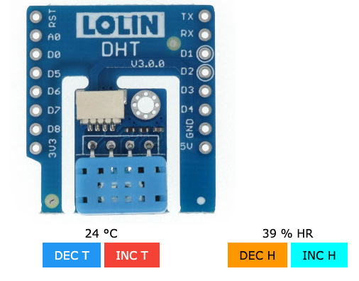
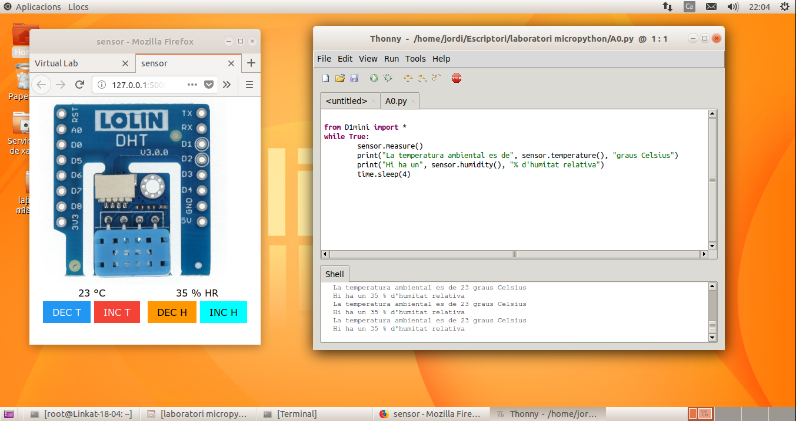

Farem servir el mòdul virtual DHT: http://localhost:5000/dht
i haureu de carregar l'arxiu A0.py a l'entorn de programació Python
Comproveu el que el mòdul virtual funciona correctament abans de posar-vos a manipular el codi.
El programa comença amb la importació de la biblioteca D1mini. Aquest fitxer ha d'estar sempre a la carpeta on teniu els vostres programes, ja que s'encarrega de la comunicació amb el nostre laboratori virtual.
El bucle while condició: executa les instruccions que conté mentre la condició sigui vàlida. Com la condició que hem possat és True Les instruccions identades s'executaran eternament.
El mòdul DHT fa servir l'ordre sensor.measure() per fer un mesurament. Un cop hàgim fet aquest mesurament podem obtenir les dades d'humitat i temperatura fen servir les ordres sensor.humidity() i sensor.temperature() respectivament
Al codi es fa servir l'ordre print("Text", sensor.humidity(), "Text") que serveix per mostrar per consola el text que estigui entre cometes i el valor que hem capturat gràcies al mòdul DHT.
També podeu veure al codi d'exemple que hi ha una nova ordre: time.sleep(X), que serveix perquè el programa esperi un número X de segons abans d'executar l'ordre següent.
Aquí teniu una còpia del codi original per si ho perdeu fent proves i ho vulgueu recuperar:
Seguiu els passos que hi ha a l'apartat d'Informació més a dalt per configurar l'entorn de treball.
Feu proves canviant els valors de temperatura i humitat del mòdul virtual DHT i veien com canvia la sortida a la pantalla de consola que teniu a sota.
Proveu de canviar el text que surt a la pantalla de consola.
Un cop que hàgiu fet les proves suficients i hàgiu après el funcionament de l'entorn i el mòdul, lliureu l'activitat.
Aquesta activitat no compta per la nota, però us servirà per fer proves i variacions amb el codi i familiaritzar-vos amb l'entorn per estar preparats per fer les següents activitats.